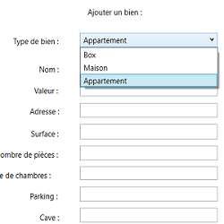

Cube Perdu est une réadaptation du jeu "The Hardest Game" dans une version plus courte, développé avec la bibilothèque Python "Pygame".

Projets
BTS SIO


GestImmo est une application de gestion immobillière développé en C#, elle permet notamment la création et l'affichage de tout type de bien immobilier.
Le morpion est un jeu de réflexion se pratiquant à un joueur contre un robot. Il fait partie d'une plateforme sur laquelle on retrouve différent mini-jeu (pendu, memory et mastermind).

Site web présentant le jeu Rainbow Six Siege, description des attaquants et défenseurs, des saisons... Disposant d'un système de connexion grâce à son développemnt en PHP.
Clique sur le bouton ci dessous pour
accéder à chaque projet sur mon Github
C'est un diplôme national en informatique de niveau bac+2. A l’issue de cette formation on peut intervenir en entreprise en tant que développeur d’applications informatiques ou administrateur de réseaux locaux.
La formation se divise en 3 partie :
- les compétences informatiques : 60%
- le fonctionnement des entreprises : 15%
- les enseignements généraux : 25%
Informatique
Développement de logiciel, administration système et réseau, bases de données et cybersécurité
Entreprise
Culture économique juridique et managériale, avec une spécialisation appliqué à l'informatique
Générale
Culture générale et expression, mathématiques pour l’informatique, anglais
A la fin du premier semestre vous choisisez entre 2 spécialités : SLAM et SISR
SLAM : Conception, développement, ainsi que déploiement et maintenance des composants logiciels d'une solution applicative
SISR : Administration des systèmes et du réseau, modification ou adaptation des solutions d'infrastructure ainsi que la qualité de service des équipements du réseaux.